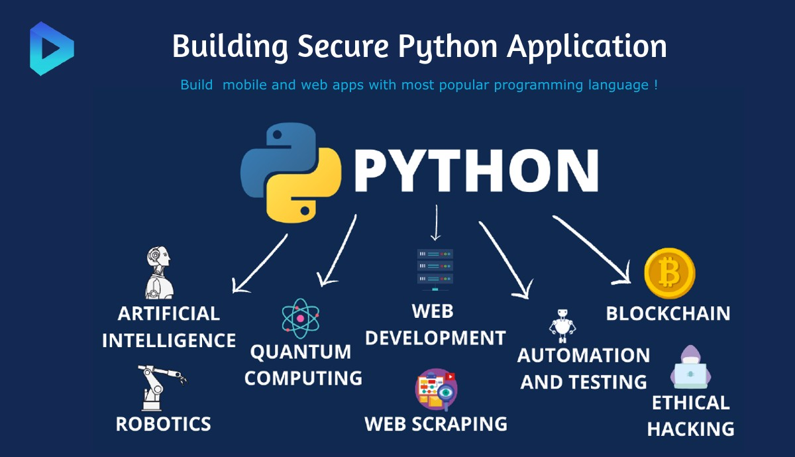

Developers mostly use Java for web apps' back-end interfaces or general
service application programming interfaces (APIs) enhanced by frameworks
such as Spring and Dropwizard. Java differs from JavaScript in that it's
a strongly typed language, translating to a deeper learning curve. The
complexity is an advantage that makes Java have higher performance. Java
enforces its performance by multi-thread work that can run concurrently.
JavaScript only uses a single thread. Java also balances complexity and
performance by avoiding many items that the coder can manage in other
languages.
Developers mostly use Java for web apps' back-end interfaces or general
service application programming interfaces (APIs) enhanced by frameworks
such as Spring and Dropwizard. Java differs from JavaScript in that it's
a strongly typed language, translating to a deeper learning curve. The
complexity is an advantage that makes Java have higher performance. Java
enforces its performance by multi-thread work that can run concurrently.
JavaScript only uses a single thread. Java also balances complexity and
performance by avoiding many items that the coder can manage in other
languages. C is a low-level language. This means that it requires the programmer to understand the underlying computer hardware. High-level languages have abstracted the computer details. For example, when using a low-level language, your program can take care of memory management in the code. Typically, higher programming languages automate the process of memory management for computers. Although C is low level, it compensates for having better performance than other easy-to-learn languages. While performance might not be a significant concern for a social media app, it's a substantial consideration for gaming apps, movie special effects software, and portions of operating systems.
 This course is the first in a 2-course series, and it will prepare you
for the JSE – Certified Entry-Level JavaScript Programmer certification
exam. The main goal of the course is to guide you from a state of
complete programming illiteracy to a level of programming knowledge
which allows you to design, write, debug, and run programs encoded in
the JavaScript language, and to understand the basic concepts of
software development technology.
This course is the first in a 2-course series, and it will prepare you
for the JSE – Certified Entry-Level JavaScript Programmer certification
exam. The main goal of the course is to guide you from a state of
complete programming illiteracy to a level of programming knowledge
which allows you to design, write, debug, and run programs encoded in
the JavaScript language, and to understand the basic concepts of
software development technology. 
React is a JavaScript-based UI development library. Facebook and an open-source developer community run it. Although React is a library rather than a language, it is widely used in web development. The library first appeared in May 2013 and is now one of the most commonly used frontend libraries for web development. React offers various extensions for entire application architectural support, such as Flux and React Native, beyond mere UI.
Structured Query Language (SQL) is used to query data. Computers send the SQL data queries to a server that responds with the requested data. SQL allows you to retrieve, insert, update, delete, and create data within a database. There are many variants of SQL and all variants have several similarities. The ANSI standard requirement enforces these similarities that the variants include significant commands, such as where, select, and delete. SQL database servers are useful in websites and apps in storing information such as a user's posts and profiles. SQL jobs and career opportunities include high-paying jobs in business intelligence and data science.  Python is the programming language that opens more doors than any other, and the more you understand Python, the more you can do in the 21st Century. With a solid knowledge of Python, you can work in a multitude of jobs and a multitude of industries. Software Engineer, Software Developer, Machine Learning Engineer, AI Engineer, DevOps Engineer, Full Stack Developer, Data Scientist, Project Manager, Systems Administrator, Security Engineer, Tester... The jobs that involve Python are varied and interesting. And there are many of them. The choices you make every day shape your reality and determine who you are, but your life-changing decisions determine who you become. Here at OpenEDG, we believe in the value of education and certification, and in the power of life-changing decisions.